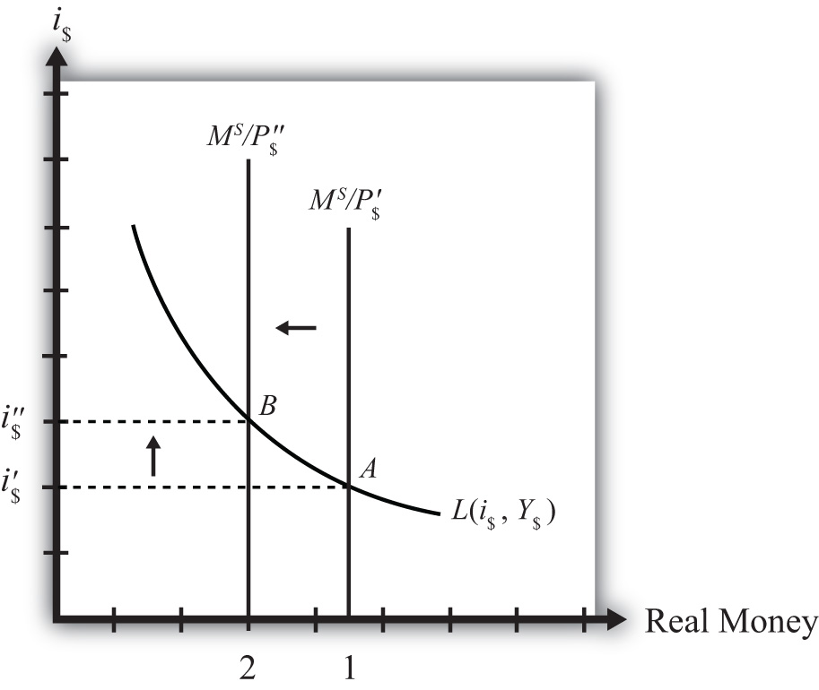

Now let’s consider the effects of a price level increase in the money market. When the price level rises in an economy, the average price of all goods and services sold is increasing. Inflation is calculated as the percentage increase in a country’s price level over some period, usually a year. This means that in the period during which the price level increases, inflation is occurring. Thus studying the effects of a price level increase is the same as studying the effects of inflation.
Inflation can arise for several reasons that will be discussed later in this chapter. For now, we will imagine that the price level increases for some unspecified reason and consider the consequences.
Suppose the money market is originally in equilibrium at point A in Figure 18.4 "Effects of a Price Level Increase" with real money supply MS/P$′ and interest rate i$′. Suppose the price level increases, ceteris paribus. Again, the ceteris paribus assumption means that we assume all other exogenous variables in the model remain fixed at their original levels. In this exercise, it means that the money supply (MS) and real GDP (Y$) remain fixed. An increase in the price level (P$) causes a decrease in the real money supply (MS/P$) since MS remains constant. In the adjoining diagram, this is shown as a shift from MS/P$′ to MS/P$″. At the original interest rate, i$′, the real money supply has fallen to level 2 along the horizontal axis, while real money demand remains at level 1. This means that money demand exceeds money supply and the actual interest rate is lower than the new equilibrium rate. Adjustment to the higher interest rate will follow the “interest rate too low” equilibrium story.
Figure 18.4 Effects of a Price Level Increase
More intuition concerning these effects arises if one recalls that price level increases will increase the transactions demand for money. In this version, nominal money demand will exceed nominal money supply and set off the same adjustment process described in the previous paragraph.
The final equilibrium will occur at point B on the diagram. The real money supply will have fallen from level 1 to level 2 while the equilibrium interest rate has risen from i$′ to i$″. Thus an increase in the price level (i.e., inflation) will cause an increase in average interest rates in an economy. In contrast, a decrease in the price level (deflation) will cause a decrease in average interest rates in an economy.
Jeopardy Questions. As in the popular television game show, you are given an answer to a question and you must respond with the question. For example, if the answer is “a tax on imports,” then the correct question is “What is a tariff?”